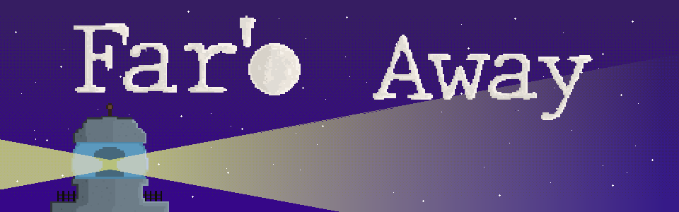

The interesting part of it's gameplay is having to focus on multiple tasks at a time and enemies behaviour. If development time was extended, various levels with different difficulties and types of enemies will be made,
This project was a submission for the IndieSpainJam23 (a 7 days gamejam). It was made on Unity as a Web Game. The jam version can be played here: Far'o Way Itch.io.
Github: Far'o Away Repository.If not visible, contact me at isabelarrans@gmail.com
Far'o Away
Game Remarks
Far'o Away is a Survival videogame where you must protect your lighthouse by repairing its old machinery while defeating intruders from the opposing country.The interesting part of it's gameplay is having to focus on multiple tasks at a time and enemies behaviour. If development time was extended, various levels with different difficulties and types of enemies will be made,
This project was a submission for the IndieSpainJam23 (a 7 days gamejam). It was made on Unity as a Web Game. The jam version can be played here: Far'o Way Itch.io.
Github: Far'o Away Repository.If not visible, contact me at isabelarrans@gmail.com
Gameplay features and Screenshots
Main mechanics:- Repair: Keep repairing damaged machinery by smashing corresponding key.
- Defeat enemies: Enemies will crawl up the lighthouse walls until they can enter the building. Hit them to make them disappear.
- Hackers: If enemies enter a floor you're not on, they'll search the nearest machinery to destroy it bit by bit.
- Main lightbulb: " Damaged machinery gradually deteriorates the main lighthouse light over time. If the main light breaks, quickly replace it with a new one, or you'll be defeated.